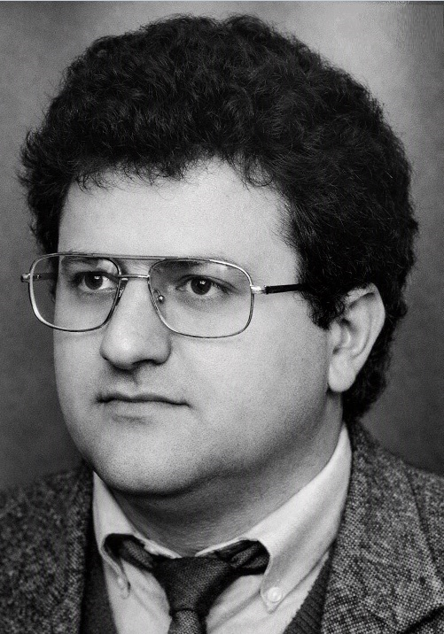

DRUGA GRANA PRVE OBITELJI TANDARA
2.0. Petar Tandara (1734.–1817.)
Petar Tandara je bio Ivanov drugi sin. Umro je 1817. godine u osamdeset i trećoj godini života, pa se procjenjuje da je rođen oko 1734. godine. Petar je bio oženjen Jelom r. Budić. Imali su sinove Grgu, Jakova (1773.), Martina, Marijana (1781.–), Miju, Tadiju i Marka (1787.–), te kćeri Mandu (1777.–) i Jelu (–1824.). Sinovi Jakov (1773.–), Marijan (1781.–), Tadija i Marko (1787.–), ne pojavljuju se na Popisu duša iz 1806. godine, a Tadija je izostavljen s popisa iz 1819. Podaci o vjerojatno živim članovima obitelji premješteni su u privatni dio arhiva.
2.1. Grgo Petrov (1770.–)
Grgo, najstariji Petrov sin, oženio je Ružu r. Pušić. Imali su sina Šimuna i kćer Ivu (1798.–).
2.1.1. Šimun Grgin (1800.–1874.)
Šimun je bio oženjen Jelom r. Budimir s kojom je imao sina Matu (1826.–), te kćeri Ivu (1831.–), Matiju (1837.–) i Martu (1845.–). O sinu Mati postoje samo podaci o godini rođenja, pa se ne može utvrditi njegov daljnji životni put niti okolnosti koje su dovele do toga da o njemu nema sačuvanih zapisa. Nakon sina Mate Šimunova je loza izumrla.
2.2. Martin Petrov (1775.–1844.)
Martin, treći Petrov sin, oženio se Ružom r. Lekić. Imali su sinove Ivana, Juru (1811.–), Miju, Grgu, Filipa (1821.–) i Josipa (1824.–), te kćeri Matiju i Anu (1828.–). Za Juru, Filipa i Josipa nisu pronađeni drugi zapisi osim onih o njihovu krštenju, pa nije poznato jesu li umrli mladi ili su se odselili. Mijini sinovi nisu ostavili muške potomke, pa su obiteljsku lozu nastavili samo Martinovi sinovi Ivan i Grgo.
2.2.1. Ivan Martinov (1807.–1877.)
Ivan, najstariji Martinov sin, oženio se 1826. Anticom r. Lažeta. Ivan i Antica imali su tri sina: Marijana (1828.–1828.), Tomu i Juru (1840.–), te kćeri Ružu (1834.–), Ivu, Jozu (1839.–1839.) i Matiju (1841.–). O Juri nisu pronađeni drugi podaci osim zapisa o njegovu rođenju. Toma je bio jedini nasljednik Ivanove loze i začetnik loze pod nadimkom TROMIĆI.
2.2.2. Mijo Martinov (1814.–)
Treći Martinov sin i njegova žena Matija r. Parlov imali su osmero djece: dva sina, Martina (1850.–) i Miju (1851.–1851.), te kćeri Luciju (1836.–1836.), Mandu (1838.–1838.), Božu (1839.–), Jozu (1845.–), Mariju (1852.–) i Matiju (1856.–). Mijo je umro nakon rođenja, a o Martinu nema drugih zapisa osim onoga o njegovu rođenju. Nakon Martina ugasila se Mijina loza. Podaci o vjerojatno živim članovima obitelji premješteni su u privatni dio arhiva.
2.2.3. Grgo Martinov (1818.–)
Grgo Martinov se ženio dvaput. Iz prvog braka s Rosom r. Budimir imao je sina Lovru i kćer Jaku (1845.–). U drugom braku s Jakom rođ. Knežević, Grgo je imao sinove Matu (1853.–1856.) i Miju, te kćeri Matiju (1850.–), Jozu (1861.–1878.) i Veroniku (1866.–).
2.3. Mijo Petrov (nema podataka za godine)
Mijo Petrov, peti Petrov sin, koji se oženio Ružom nepoznatog prezimena, imao je samo kćer Matiju (1810.–). Mijo nije imao nasljednika loze. Godine 1819. obitelj Martina Tandare, Lovrina djeda, bila je u Zavelimu. Na tom su popisu navedeni Martinovi sinovi Ivan, Mijo i Grgo. Kad je 1835. godine izrađivan austrijski katastar, Martin Tandara pok. Petra upisan je kao posjednik nekretnina u Ričicama. Većina ričićkih plemena imala je u to vrijeme nekretnine u Ričicama, Zavelimu, Podbiloj i Viru. Navedena sela imala su zajedničku župu u Ričicama. Mnoge obitelji unutar jednog roda selile su se s jednog lokaliteta na drugi, čak i u samim Ričicama. Broj stanovnika je naglo rastao i tražili su se novi prostori za život. U tom kontekstu možemo razumjeti i prihvatiti činjenicu da je neka obitelj, ili njezin dio, u jednom popisu bila u Ričicama, a u sljedećem u Zavelimu ili obrnuto. Međutim, pouzdano se zna da se Grgo s djecom iz Zavelima vratio u Ričice i ondje nastavio život sa svojom obitelji.
POČETAK MIGRACIJA IZVAN RIČICA
Godine 1819. obitelj Martina Tandare, Lovrina djeda, bila je u Zavelimu. Na tom su popisu navedeni Martinovi sinovi Ivan, Mijo i Grgo. Kad je 1835. godine izrađivan austrijski katastar, Martin Tandara pok. Petra upisan je kao posjednik nekretnina u Ričicama. Većina ričićkih plemena imala je u to vrijeme nekretnine u Ričicama, Zavelimu, Podbiloj i Viru. Navedena sela imala su zajedničku župu u Ričicama. Mnoge obitelji unutar jednog roda selile su se s jednog lokaliteta na drugi, čak i u samim Ričicama. Broj stanovnika je naglo rastao i tražili su se novi prostori za život. U tom kontekstu možemo razumjeti i prihvatiti činjenicu da je neka obitelj, ili njezin dio, u jednom popisu bila u Ričicama, a u sljedećem u Zavelimu ili obrnuto. Međutim, pouzdano se zna da se Grgo s djecom iz Zavelima vratio u Ričice i ondje nastavio život sa svojom obitelji.
TROMIĆI
2.2.1.1. Toma Ivanov (1830.–)
Toma je bio oženjen Tomicom r. Kovač. Imali su sinove Ivana (1866.–), Matu (1870.–), Juru i ponovno Ivana (1879.–1879.). Jedini Tomin nasljednik bio je sin Jure. Tomina loza u Zavelimu bila je poznata pod nadimkom TROMIĆI, nastalim prema predaji o njihovoj visini i sporom, tromom hodu.
LOZA JURE TOMINA
2.2.1.1.1. Jure Tomin (1874.–1931.)
Treći Tomin sin i jedini nasljednik uzeo je za ženu Ivu r. Lažeta. Imali su sinove Tomu (1909.–1914.) i Ivana (1911.–1915.), zatim Pia, Dominika i Matu, te kćer Matiju (1908.–). Lozu su nastavili sinovi Pio, Dominik i Mate.
2.2.1.1.1.1. Pio Jurin (1916.–1990.)
Pio je oženio Tereziju Budimir i imao potomke. Njihovi sinovi Ivan (1935.–2025.), Jure (1943.–2004.) i Jozo (1949.–2019.) preminuli su. Podaci o vjerojatno živim članovima obitelji nalaze se u privatnom arhivu.
2.2.1.1.1.1.1. Ivan Piin (1935.–2025.)
Ivan Piin živio je od 1935. do 2025. godine. Bio je oženjen i imao potomke. Podaci o vjerojatno živim članovima obitelji nalaze se u privatnom arhivu.
2.2.1.1.1.1.1.1. Živi potomak – privatni podaci
Podaci o vjerojatno živom članu dostupni su samo odobrenim korisnicima privatnog arhiva.
2.2.1.1.1.1.2. Jure Piin (1943.–2004.)
Jure Piin oženio je Milu Škorić. Njihov sin Tomislav nije se ženio. Podaci o ostalim vjerojatno živim članovima obitelji nalaze se u privatnom arhivu.
2.2.1.1.1.1.3. Jozo Piin (1949.–2019.)
Jozo Piin živio je od 1949. do 2019. godine i umro je u Splitu. Bio je oženjen i imao potomke. Podaci o vjerojatno živim članovima obitelji nalaze se u privatnom arhivu.
2.2.1.1.1.2. Dominik Jurin (1919.–1987.)
Četvrti Jurin sin Dominik bio je oženjen Marom r. Knezović. Njegova se loza nastavila preko potomaka. Podaci o vjerojatno živim članovima obitelji nalaze se u privatnom arhivu.
2.2.1.1.1.2.1. Živi potomak – privatni podaci
Podaci o vjerojatno živom članu dostupni su samo odobrenim korisnicima privatnog arhiva.
2.2.1.1.1.2.2. Živi potomak – privatni podaci
Podaci o vjerojatno živom članu dostupni su samo odobrenim korisnicima privatnog arhiva.
2.2.1.1.1.2.3. Živi potomak – privatni podaci
Podaci o vjerojatno živom članu dostupni su samo odobrenim korisnicima privatnog arhiva.
2.2.1.1.1.2.4. Živi potomak – privatni podaci
Podaci o vjerojatno živom članu dostupni su samo odobrenim korisnicima privatnog arhiva.
2.2.1.1.1.2.5. Živi potomak – privatni podaci
Podaci o vjerojatno živom članu dostupni su samo odobrenim korisnicima privatnog arhiva.
2.2.1.1.1.2.6. Živi potomak – privatni podaci
Podaci o vjerojatno živom članu dostupni su samo odobrenim korisnicima privatnog arhiva.
2.2.1.1.1.3. Mate Jurin (1922.–1963.)
Mate, peti Jurin sin, oženio je Maru r. Budić. Imali su sinove Tomislava i Miju (1955.–1960.). Podaci o vjerojatno živim članovima obitelji nalaze se u privatnom arhivu.
2.2.1.1.1.3.1. Tomislav Matin (1947.–2014.)
Tomislav Matin živio je od 1947. do 2014. godine. Bio je oženjen i imao potomke. Podaci o vjerojatno živim članovima obitelji nalaze se u privatnom arhivu.
2.2.1.1.1.3.1.1. Živi potomak – privatni podaci
Podaci o vjerojatno živom članu dostupni su samo odobrenim korisnicima privatnog arhiva.
LOZA LOVRE GRGINA
2.2.3.1. Lovro Grgin (1842.–1922.)
Lovro se oženio Ivom r. Parlov, s kojom je dobio sinove Antu, Ivana (1876.–) i Marijana, te kćeri prvu Luciju (1864.–1876.), Ivu (1884.–1908.) i drugu Luciju (–1877.). Ante i Marijan bili su jedini nasljednici loze. Njihovi su potomci imali trideset troje djece. U Matičnoj knjizi umrlih župe Ričice zapisano je da su Lovrinu kćer Lucu u trinaestoj godini života „ubile stine“.
2.2.3.1.1. Ante Lovrin (1871.–1933.)
Ante Lovrin bio je oženjen Tomicom r. Lukić i s njom je imao sinove Ivana, Marijana, prvoga Matu (1906.–1907.), drugoga Matu (1910.–) i Nikolu (1915.–1981.), te kćeri Martu (1901.–), Ivu (1905.–1911.) i Matiju (1908.–). Nasljednici loze bili su Ivan, Marijan, Mate i Nikola.
2.2.3.1.1.1. Ivan Antin (1896.–)
Ivan je oženio Maru Mršić i imao potomke. Njihov sin Mate (1932.–1970.) preminuo je. Ivan se odselio u Slatinu. Podaci o vjerojatno živim članovima obitelji nalaze se u privatnom arhivu.
2.2.3.1.1.2. Marijan Antin (1898.–1933.)
Marijan Antin bio je u braku s Milicom r. Mikulić i imao je sinove Franu (1927.–1945.), koji je poginuo u Beču, i Antu (1929.–1929.), te kćeri Mariju (1930.–) i Stanu (1932.–1933.). Marijan je umro od upale pluća u trideset i petoj godini života. Marijanovi sinovi nisu imali potomaka, pa se njegova loza ugasila.
2.2.3.1.1.3. Mate Antin (1910.–1991.)
Mate je oženio Maru Knežević i imao potomke. Njihov sin Ante Bruno živio je od 1937. do 1989. godine. Podaci o vjerojatno živim članovima obitelji nalaze se u privatnom arhivu.
2.2.3.1.1.4. Nikola Antin (1915.–1981.)
Nikola je oženio Tomicu Budimir i imao potomke. Njihovi sinovi Ante (1950.–1950.) i Ivan (1955.–1955.) umrli su kao djeca. Podaci o vjerojatno živim članovima obitelji nalaze se u privatnom arhivu.
2.2.3.1.1.1.1. Lovre Ivanov (1925.–)
Povijesni podatak o ovoj osobi ostaje javno dostupan. Podaci o vjerojatno živim članovima obitelji premješteni su u privatni dio arhiva.
2.2.3.1.1.1.2. Mirko Ivanov (1928.–)
Povijesni podatak o ovoj osobi ostaje javno dostupan. Podaci o vjerojatno živim članovima obitelji premješteni su u privatni dio arhiva.
2.2.3.1.1.1.2.1. Živi potomak – privatni podaci
Podaci o vjerojatno živom članu dostupni su samo odobrenim korisnicima privatnog arhiva.
2.2.3.1.1.1.2.2. Živi potomak – privatni podaci
Podaci o vjerojatno živom članu dostupni su samo odobrenim korisnicima privatnog arhiva.
2.2.3.1.1.1.3. Mate Ivanov (1932.–1970.)
Mate Ivanov živio je od 1932. do 1970. godine. Bio je oženjen i imao potomke. Podaci o vjerojatno živim članovima obitelji nalaze se u privatnom arhivu.
2.2.3.1.1.1.4. Živi potomak – privatni podaci
Podaci o vjerojatno živom članu dostupni su samo odobrenim korisnicima privatnog arhiva.
2.2.3.1.1.1.4.1. Živi potomak – privatni podaci
Podaci o vjerojatno živom članu dostupni su samo odobrenim korisnicima privatnog arhiva.
2.2.3.1.1.1.4.2. Živi potomak – privatni podaci
Podaci o vjerojatno živom članu dostupni su samo odobrenim korisnicima privatnog arhiva.
2.2.3.1.1.3.1. Ante Bruno Matin (1937.–1989.)
Dr. Ante Bruno Tandara rođen je 7. listopada 1937. u Ričicama. Brak je sklopio 1968. godine, a podaci o vjerojatno živim članovima njegove obitelji nalaze se u privatnom arhivu. Bio je hrvatski liječnik, narodni zastupnik u Saboru SR Hrvatske i sudionik Hrvatskog proljeća. Na izborima 1969. godine izabran je za zastupnika, a nakon sloma Hrvatskog proljeća oduzet mu je zastupnički imunitet. Zbog političkog djelovanja bio je uhićen i osuđen na dvije godine i četiri mjeseca strogog zatvora, koje je odslužio u Staroj Gradiški.

2.2.3.1.1.3.1.1. Živi potomak – privatni podaci
Podaci o vjerojatno živom članu dostupni su samo odobrenim korisnicima privatnog arhiva.
2.2.3.1.1.3.2. Živi potomak – privatni podaci
Podaci o vjerojatno živom članu dostupni su samo odobrenim korisnicima privatnog arhiva.
2.2.3.1.1.3.2.1. Živi potomak – privatni podaci
Podaci o vjerojatno živom članu dostupni su samo odobrenim korisnicima privatnog arhiva.
2.2.3.1.1.4.1. Živi potomak – privatni podaci
Podaci o vjerojatno živom članu dostupni su samo odobrenim korisnicima privatnog arhiva.
2.2.3.1.1.4.1.1. Živi potomak – privatni podaci
Podaci o vjerojatno živom članu dostupni su samo odobrenim korisnicima privatnog arhiva.
2.2.3.1.1.4.2. Živi potomak – privatni podaci
Podaci o vjerojatno živom članu dostupni su samo odobrenim korisnicima privatnog arhiva.
LOZA MARIJANA LOVRINA
2.2.3.1.2. Marijan Lovrin (1881.–1939.) - nadimak potomaka: LOVRIĆI
Marijan je oženio Lucu r. Parlov s kojom je dobio sinove Miju, Marina, Petra i Ivana (1924.–1925.), te kćeri Matiju (1907.–), Anu (1910.–), Ivu (1918.–2005.) i Tomicu (1921.–). Ivan je umro nedugo nakon rođenja.
2.2.3.1.2.1. Mijo Marijanov (1908.–)
Povijesni podatak o ovoj osobi ostaje javno dostupan. Podaci o vjerojatno živim članovima obitelji premješteni su u privatni dio arhiva.
2.2.3.1.2.1.1. Vinko Mijin (1930.–)
Povijesni podatak o ovoj osobi ostaje javno dostupan. Podaci o vjerojatno živim članovima obitelji premješteni su u privatni dio arhiva.
2.2.3.1.2.1.1.1. Živi potomak – privatni podaci
Podaci o vjerojatno živom članu dostupni su samo odobrenim korisnicima privatnog arhiva.
2.2.3.1.2.1.2. Živi potomak – privatni podaci
Podaci o vjerojatno živom članu dostupni su samo odobrenim korisnicima privatnog arhiva.
2.2.3.1.2.1.2.1. Živi potomak – privatni podaci
Podaci o vjerojatno živom članu dostupni su samo odobrenim korisnicima privatnog arhiva.
2.2.3.1.2.1.2.2. Željko Milanov (1967.–2020.)
Željko Milanov živio je od 1967. do 2020. godine. Podaci o vjerojatno živim članovima obitelji nalaze se u privatnom arhivu.
2.2.3.1.2.1.2.3. Živi potomak – privatni podaci
Podaci o vjerojatno živom članu dostupni su samo odobrenim korisnicima privatnog arhiva.
2.2.3.1.2.1.3. Živi potomak – privatni podaci
Podaci o vjerojatno živom članu dostupni su samo odobrenim korisnicima privatnog arhiva.
2.2.3.1.2.1.3.1. Živi potomak – privatni podaci
Podaci o vjerojatno živom članu dostupni su samo odobrenim korisnicima privatnog arhiva.
2.2.3.1.2.2. Marin Marijanov (1912.–1989.)
Marin je oženio Matiju r. Žuljić. Njihovi sinovi Marijan (1941.–1943.) i Luka (1948.–1948.) umrli su kao mala djeca. Podaci o vjerojatno živim članovima obitelji nalaze se u privatnom arhivu.
2.2.3.1.2.2.1. Živi potomak – privatni podaci
Podaci o vjerojatno živom članu dostupni su samo odobrenim korisnicima privatnog arhiva.
2.2.3.1.2.2.1.1. Živi potomak – privatni podaci
Podaci o vjerojatno živom članu dostupni su samo odobrenim korisnicima privatnog arhiva.
2.2.3.1.2.2.2. Živi potomak – privatni podaci
Podaci o vjerojatno živom članu dostupni su samo odobrenim korisnicima privatnog arhiva.
2.2.3.1.2.2.3. Živi potomak – privatni podaci
Podaci o vjerojatno živom članu dostupni su samo odobrenim korisnicima privatnog arhiva.
2.2.3.1.2.2.3.1. Živi potomak – privatni podaci
Podaci o vjerojatno živom članu dostupni su samo odobrenim korisnicima privatnog arhiva.
2.2.3.1.2.2.3.2. Živi potomak – privatni podaci
Podaci o vjerojatno živom članu dostupni su samo odobrenim korisnicima privatnog arhiva.
2.2.3.1.2.3. Petar Marijanov (1915.–)
Povijesni podatak o ovoj osobi ostaje javno dostupan. Podaci o vjerojatno živim članovima obitelji premješteni su u privatni dio arhiva.
2.2.3.2. Mijo Grgin (1856.–1933.)
Treći Grgin sin Mijo oženio se Ivom Tandara, s kojom je dobio sedmero djece: sinove Martina (1886.–1905.), prvoga Nikolu (1889.–), Matu (1892.–) i drugoga Nikolu (1902.–), te kćeri Ivu (1883.–), prvu Maru (1886.–1891.) i drugu Maru (1894.–). Martin je umro u dobi od 19 godina, a prvi Nikola i Mate umrli su kao mala djeca. O drugom Nikoli nema drugih podataka osim zapisa o njegovu rođenju. Ni za jednoga Mijina sina nema podataka da se ženio ili imao djecu, pa se njegova obiteljska grana time ugasila.
Interaktivni dijagram Petrove grane
Otvorite pripadajući interaktivni rodoslovni dijagram ove obiteljske grane.
Napomena!
Kompletno rodoslovno stablo ove obiteljske grane nalazi se u desnom interaktivnom dijagramu na početnoj stranici Digitalnog arhiva roda Tandara.
Na početnoj stranici odaberite klikabilni okvir pod nazivom „Petrova grana”. Klikom na taj okvir otvara se odgovarajući dio rodoslovnog stabla s potomcima ove grane.